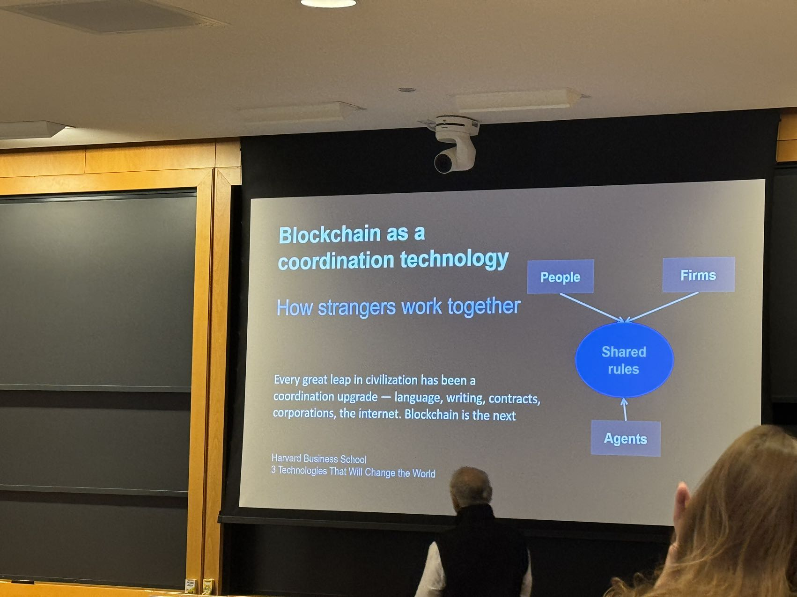
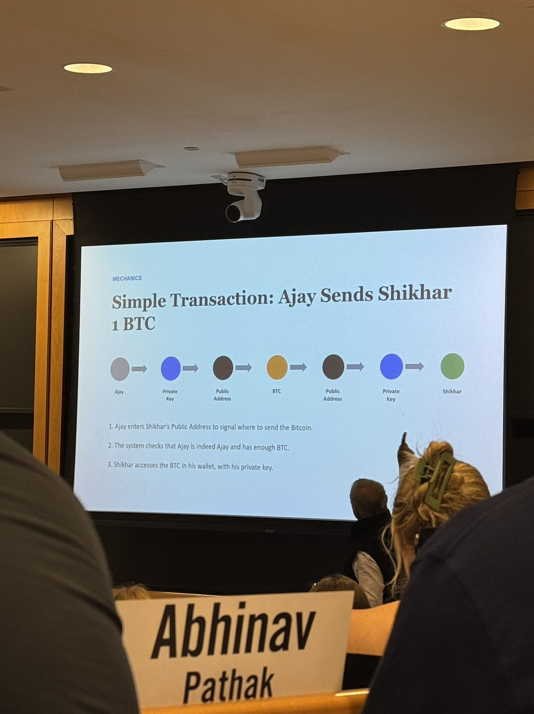
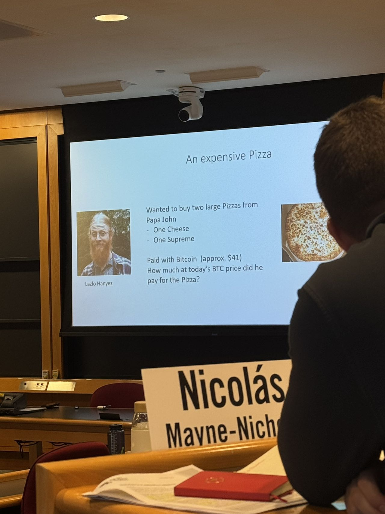
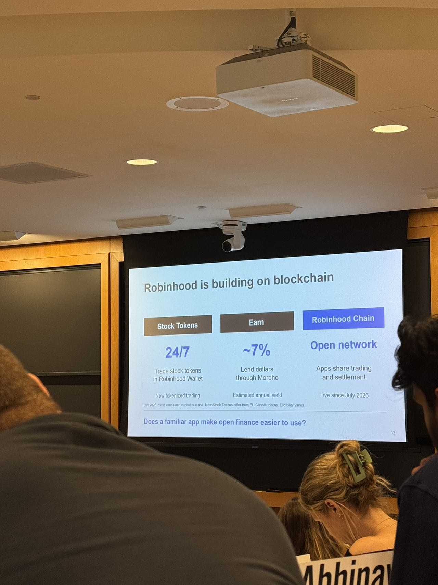
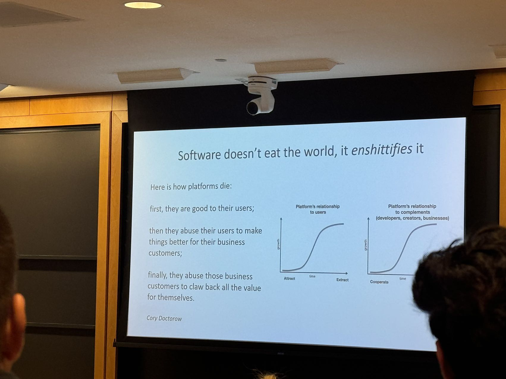
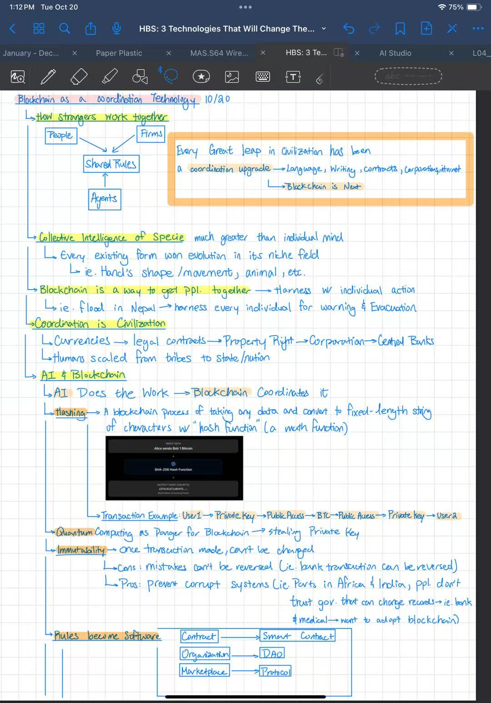
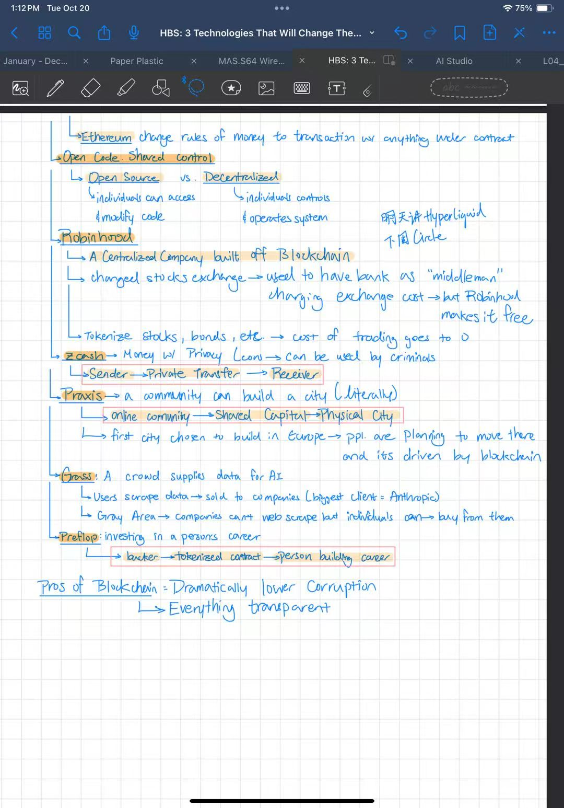

Blockchain as a coordination technology: how strangers work together. The text below follows the handwritten notes, and the classroom slide photographs are inserted directly.
01 / COORDINATION
How strangers work together
01People
Participants act under a common set of rules.
02Firms
Organizations coordinate activity through shared rules.
03Agents
Agents also operate through the same shared rules.
- Every great leap in civilization has been a coordination upgrade: language, writing, contracts, corporations, the internet. Blockchain is the next.
- Collective intelligence of species is much greater than individual mind.
- Every existing form won evolution in its niche field, e.g. hand’s shape / movement, animals, etc.
- Blockchain is a way to get people together → harness with individual action.
- Example: flood in Nepal → harness every individual for warning and evacuation.
- Coordination is civilization.
- Currencies → legal contracts → property rights → corporations → central banks.
- Humans scaled from tribes to state / nation.
- AI does the work → blockchain coordinates it.

02 / MECHANICS
Mechanics recorded in the notes
Hashing
- A blockchain process of taking any data and converting it to a fixed-length string of characters with a hash function, a math function.
Transaction example
- User 1 → private key → public address → BTC → public address → private key → User 2.
- Ajay enters Shikhar’s public address to signal where to send the Bitcoin.
- The system checks that Ajay is indeed Ajay and has enough BTC.
- Shikhar accesses the BTC in his wallet with his private key.

- Quantum computing as danger for blockchain → stealing private key.
- Immutability: once a transaction is made, it can’t be changed.
- Cons: mistakes can’t be reversed, e.g. a bank transaction can be reversed.
- Pros: prevents corrupt systems. In parts of Africa and India, people don’t trust governments that can change records; banks and medical systems may want to adopt blockchain.
An expensive pizza
- Laszlo Hanyecz wanted to buy two large pizzas from Papa John’s: one cheese, one supreme.
- Paid with Bitcoin, approximately $41.
- Question on slide: how much at today’s BTC price did he pay for the pizza?

03 / SOFTWARE
Rules become software
- Contract → smart contract.
- Organization → DAO.
- Marketplace → protocol.
- Ethereum changes rules of money to transactions with anything under contract.
- Open code, shared control.
- Open source: individuals can access and modify code.
- Decentralized: individuals control and operate the system.
04 / CASES
Cases recorded in class
Robinhood
- A centralized company built off blockchain.
- Changed stock exchange: previously had a bank as “middleman,” charging exchange cost; Robinhood makes it free.
- Tokenize stocks, bonds, etc. → cost of trading goes to 0.
- Stock Tokens: 24/7, trade stock tokens in Robinhood Wallet.
- Earn: ~7%, lend dollars through Morpho.
- Robinhood Chain: open network; apps share trading and settlement.

Zcash
- Money with privacy coin → can be used by criminals.
- Sender → private transfer → receiver.
Praxis
- A community can build a city, literally.
- Online community → shared capital → physical city.
- First city chosen to build in Europe → people are planning to move there, and it’s driven by blockchain.
Grass
- A crowd supplies data for AI.
- Users scrape data → sold to companies; biggest client = Anthropic.
- Gray area: companies can’t web scrape, but individuals can → buy from them.
Preflop
- Investing in a person’s career.
- Backer → tokenized contract → person building career.
Pros of blockchain
- Dramatically lower corruption.
- Everything transparent.
05 / PLATFORMS
Software doesn’t eat the world, it enshittifies it
- Here is how platforms die:
- First, they are good to their users.
- Then they abuse their users to make things better for their business customers.
- Finally, they abuse those business customers to claw back all the value for themselves.
- Cory Doctorow.

06 / SOURCE
Original handwritten notes

